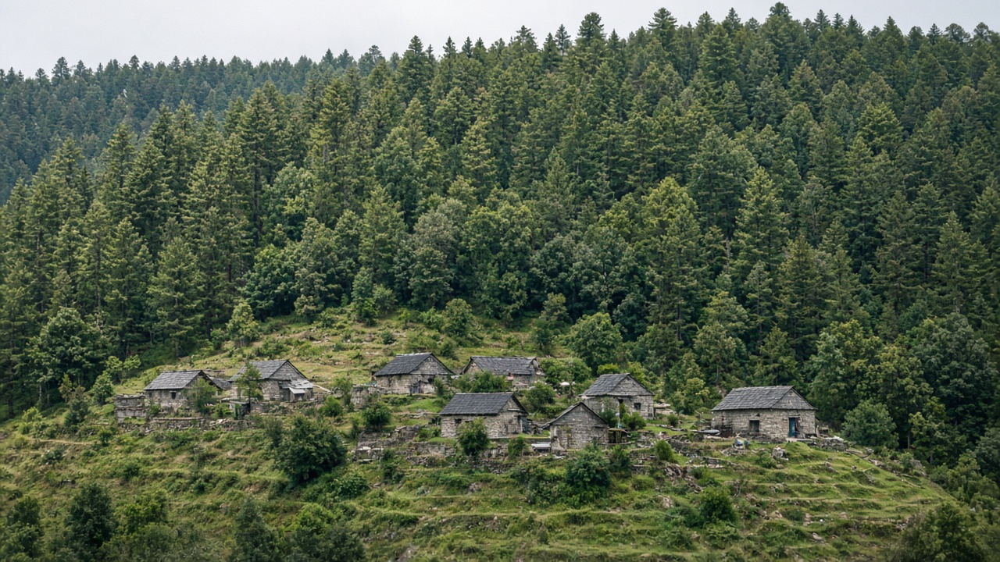
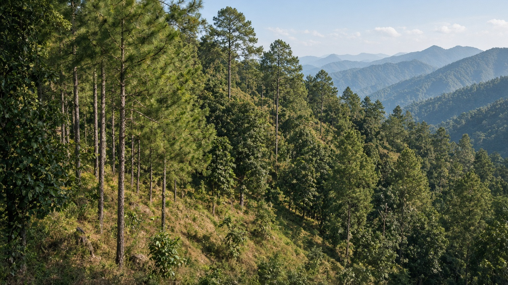

Community Forestry and Forest User Groups
Published on August 20, 2026

Community forestry transfers management rights and responsibilities for a defined forest to the people who live beside it, usually through a legal user group with an operational plan, assembly, and elected committee. The model assumes that local users have the strongest incentive to stop open-access overcutting if they can harvest fuelwood, fodder, timber, and other products under agreed rules and keep a share of the benefits. Success depends on clear boundaries, fair membership, transparent funds, and technical support for inventories and regeneration—not on the label “community” alone. Where tenure stays ambiguous or elites capture committees, the forest can still degrade. Where rules match ecology and households see real returns, canopy and soil often recover faster than under distant state patrols.
Forest user groups typically map compartments, set closed seasons, allocate harvest lots, hire watchers, and invest surplus in trails, water, or schools. Equity is a persistent challenge: landless households, women, and distant hamlets may have weaker voice in assemblies even when they depend more on leaf litter and grazing. Nested governance—user groups federated at landscape scale—helps with fire, grazing across boundaries, and marketing of timber. Conflicts with neighboring groups, with the forest administration over permit delays, and with infrastructure projects that cut through community forests require documented grievance paths. Monitoring that users themselves can repeat—simple plots, harvest registers, photo points—keeps plans honest when staff change.
Nepal’s community forest user groups are among the most widely studied examples: mid-hill pine and mixed hardwoods recovered after handover, while tarai and high-value sal forests have needed extra safeguards against elite capture and illegal offtake. The lesson for other countries is not to copy every bylaw but to pair secure use rights with accountable assemblies and ecological limits. Expanding the model to collaborative management of larger production forests, and to rangeland–forest mosaics, is the next institutional step. Education for new committee members on silviculture, bookkeeping, and inclusion matters as much as seedling distribution. Community forestry is forest governance, not a planting campaign: it works when people who bear the cost of restraint also hold the right to the growth that restraint produces.
सामुदायिक वनले परिभाषित वनका व्यवस्थापन अधिकार र जिम्मेवारी छेउमा बस्ने मानिसलाई हस्तान्तरण गर्छ, प्रायः सञ्चालन योजना, सभा र निर्वाचित समिति भएको कानुनी उपभोक्ता समूहमार्फत। मोडेल मान्छ कि स्थानीय उपभोक्तासँग खुला पहुँच अधिक कटान रोक्ने सबैभन्दा बलियो प्रोत्साहन हुन्छ यदि तिनीहरू सहमत नियमअन्तर्गत दाउरा, घाँस, काठ र अन्य उत्पादन कटान गर्न र लाभको हिस्सा राख्न पाउँछन्। सफलता स्पष्ट सीमा, निष्पक्ष सदस्यता, पारदर्शी कोष र सूची तथा पुनरुत्पादनका लागि प्राविधिक सहयोगमा निर्भर हुन्छ—“समुदाय” लेबलमा मात्र होइन। स्वामित्व अस्पष्ट रह्यो वा समितिमा अभिजात कब्जा भयो भने वन अझै क्षय हुन सक्छ। नियम पारिस्थितिकीसँग मिल्यो र घरधुरीले साँचो प्रतिफल देखे छानो र माटो टाढाको राज्य गस्तीभन्दा चाँडै फर्किन सक्छन्।
वन उपभोक्ता समूह प्रायः कम्पार्टमेन्ट नक्सा गर्छन्, बन्द याम तोक्छन्, कटान लट बाँड्छन्, हेरालु राख्छन् र बचत गोरेटो, पानी वा विद्यालयमा लगानी गर्छन्। समता लगातार चुनौती हो: भूमिहीन घरधुरी, महिला र टाढाका टोललाई सभामा कम आवाज हुन सक्छ जबकि तिनीहरू पात कूडा र चराइमा बढी निर्भर हुन्छन्। तहगत शासन—परिदृश्य स्तरमा महासंघित उपभोक्ता समूह—आगो, सीमापार चराइ र काठ बजारीकरणमा मद्दत गर्छ। छिमेकी समूहसँग, अनुमति ढिलाइमा वन प्रशासनसँग, र सामुदायिक वन काट्ने पूर्वाधार आयोजनासँग द्वन्द्वलाई कागजात भएको गुनासो बाटो चाहिन्छ। उपभोक्ता आफै दोहोर्याउन सक्ने निगरानी—सरल प्लट, कटान रजिस्टर, फोटो बिन्दु—कर्मचारी फेरिंदा योजना इमानदार राख्छ।
नेपालका सामुदायिक वन उपभोक्ता समूह सबैभन्दा व्यापक अध्ययन भएका उदाहरणमध्ये हुन्: हस्तान्तरणपछि मध्य पहाडी सल्ला र मिश्रित कडा काठ फर्किए, जबकि तराई र उच्च मूल्य साल वनलाई अभिजात कब्जा र अवैध निकालाइविरुद्ध थप सुरक्षा चाहियो। अन्य देशका लागि पाठ प्रत्येक विनियम नक्कल गर्नु होइन सुरक्षित प्रयोग अधिकारलाई जवाफदेही सभा र पारिस्थितिक सीमासँग जोड्नु हो। ठूला उत्पादन वनको सहकार्य व्यवस्थापन र खर्क–वन मोज़ेकमा मोडेल विस्तार गर्नु अर्को संस्थागत कदम हो। नयाँ समिति सदस्यलाई वनविज्ञान, लेखा र समावेशीकरण शिक्षा बिरुवा वितरणजत्तिकै महत्त्वपूर्ण छ। सामुदायिक वन रोपण अभियान होइन वन शासन हो: यो तब काम गर्छ जब संयमको लागत बोक्ने मानिसले त्यो संयमले जन्माएको वृद्धिको अधिकार पनि राख्छन्।

सामुदायिक वन परिभाषित वन के प्रबंधन अधिकार और ज़िम्मेदारियाँ पास रहने वाले लोगों को सौंपता है, प्रायः संचालन योजना, सभा और निर्वाचित समिति वाले कानूनी उपभोक्ता समूह के माध्यम से। मॉडल मानता है कि स्थानीय उपभोक्ताओं के पास खुली पहुँच अति कटाई रोकने का सबसे बल प्रोत्साहन होता है यदि वे सहमत नियमों के तहत ईंधन काष्ठ, चारा, इमारती लकड़ी और अन्य उत्पाद काट सकें और लाभ का हिस्सा रख सकें। सफलता स्पष्ट सीमाओं, निष्पक्ष सदस्यता, पारदर्शी कोष और सूची तथा पुनरुत्पादन के तकनीकी सहयोग पर निर्भर करती है—“समुदाय” लेबल पर नहीं। स्वामित्व अस्पष्ट रहे या समितियों में अभिजात कब्ज़ा हो तो वन अभी क्षय हो सकता है। नियम पारिस्थितिकी से मिलें और घर-परिवार साचा प्रतिफल देखें तो छत्र और मिट्टी दूर राज्य गश्त से तेज़ी से लौट सकते हैं।
वन उपभोक्ता समूह प्रायः कक्ष नक्शा करते, बंद मौसम तय करते, कटाई लॉट बाँटते, रखवाले रखते और बचत पगडंडियों, जल या स्कूलों में निवेश करते हैं। समता लगातार चुनौती है: भूमिहीन घर, महिलाएँ और दूर टोले सभा में कम आवाज़ पा सकते हैं जबकि वे पत्ती कूड़ा और चरान पर अधिक निर्भर होते हैं। स्तरित शासन—परिदृश्य पैमाने पर महासंघित उपभोक्ता समूह—आग, सीमापार चरान और काष्ठ विपणन में मदद करता है। पड़ोसी समूहों, अनुमति देरी पर वन प्रशासन, और सामुदायिक वन काटते अवसंरचना परियोजनाओं से द्वंद्व को दस्तावेज़ीकृत शिकायत पथ चाहिए। उपभोक्ता स्वयं दोहरा सकने वाली निगरानी—सरल प्लॉट, कटाई रजिस्टर, फ़ोटो बिंदु—कर्मचारी बदलने पर योजना ईमानदार रखती है।
नेपाल के सामुदायिक वन उपभोक्ता समूह सबसे व्यापक अध्ययन किए उदाहरणों में हैं: हस्तांतरण के बाद मध्य पहाड़ी चीड़ और मिश्रित कठोर काष्ठ लौटे, जबकि तराई और उच्च मूल्य साल वन को अभिजात कब्ज़ा और अवैध निकासी के विरुद्ध अतिरिक्त सुरक्षा चाहिए थी। अन्य देशों के लिए पाठ प्रत्येक विनियम नकल करना नहीं सुरक्षित उपयोग अधिकार को जवाबदेह सभाओं और पारिस्थितिक सीमाओं से जोड़ना है। बड़े उत्पादन वनों के सहयोगी प्रबंधन और चरागाह–वन मोज़ेक तक मॉडल विस्तार अगला संस्थागत कदम है। नई समिति सदस्यों को वनविज्ञान, लेखा और समावेश शिक्षा पौधे वितरण जितनी महत्त्वपूर्ण है। सामुदायिक वन रोपण अभियान नहीं वन शासन है: यह तब काम करता है जब संयम की लागत उठाने वाले लोग उस संयम से जन्मी वृद्धि का अधिकार भी रखते हैं।